hallo vercel test
Diese Seite ist statisch. Der Knopf fragt eine kleine Serverfunktion unter /api/hallo, die bei Vercel läuft und meldet, aus welcher Umgebung sie antwortet.

Diese Seite ist statisch. Der Knopf fragt eine kleine Serverfunktion unter /api/hallo, die bei Vercel läuft und meldet, aus welcher Umgebung sie antwortet.
